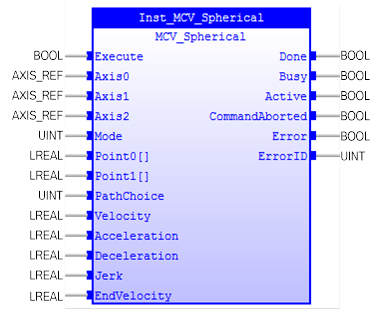

Performs a spherical move and additionally allows vector speed to be changed when using multiple moves in the look ahead buffer when (TrioBASIC) MERGE=ON.

MCV_Spherical is used to move the three-axis group along a spherical path with a vector speed determined by the velocity set in the first axis. There are 2 modes of operation with the option of finishing the move at an endpoint different to the start or returning to the start point to complete a circle. The path of the movement in 3D space can be defined either by specifying a point somewhere along the path, or by specifying the centre of the sphere.
When MCV_Spherical is executed, Axis0, Axis1, and Axis2 PLCopen states will change to ‘DiscreteMotion’.
Axis0, Axis1, or Axis2 can be used in MC_Stop to stop motion on all axes.
‘Point0[]’ and ‘Point1[]’ setup under different modes are shown in the table below:
|
Mode |
Description |
Meaning |
|
‘Mode’= 0 |
Move the three axes through a section of a sphere by specifying ‘Point0[]’ (the end point) and ‘Point1[]’ ( mid point) on the curve. |
Point0[0]: End position of Axis0 Point0[1]: End position of Axis1 Point0[2]: End position of Axis2 Point1[0]: Mid position of Axis0 Point1[1]: Mid position of Axis1 Point1[2]: Mid position of Axis2 |
|
‘Mode’= 1 |
Move the three axes through a section of a sphere by specifying ‘Point0[]’ (the end point) and ‘Point1[]’ (the centre of the sphere). The profile will always go the shortest path to ‘Point0[]’ (the end point). This may be clockwise or counterclockwise. The coordinates of the centre point and end point must not be co-linear. Semi-circles cannot be defined by using mode 1 because the sphere centre would be co-linear with the endpoint. If co-linier points are specified the controller will stop, an error will occur. |
Point0[0]: End position of Axis0 Point0[1]: End position of Axis1 Point0[2]: End position of Axis2 Point1[0]: Centre position of Axis0 Point1[1]: Centre position of Axis1 Point1[2]: Centre position of Axis2 |
|
‘Mode’= 2 |
Move the three axes through a full circle on a sphere by specifying two mid points of the curve. The profile will move through the first mid position, then the second and finally back to the start point.
|
Point0[0]: Second mid position of Axis0 Point0[1]: Second mid position of Axis1 Point0[2]: Second mid position of Axis2 Point1[0]: First mid position of Axis0 Point1[1]: First mid position of Axis1 Point1[2]: First mid position of Axis2 |
|
‘Mode’ = 3 |
Move the three axes through a full circle on a sphere by specifying ‘Point0[]’ (a mid point) and ‘Point1[]’ (the centre of the sphere). The profile will start by heading in the shortest distance to‘Point0[]’(the mid point), this enables you to define the direction. The coordinates of ‘Point1[]’ (the centre point) and ‘Point0[]’ (mid point) must not be co-linear. If co-linier points are specified, the controller will stop and an error will occur. |
Point0[0]: Mid position of Axis0 Point0[1]: Mid position of Axis1 Point0[2]: Mid position of Axis2 Point1[0]: Centre position of Axis0 Point1[1]: Centre position of Axis1 Point2[2]: Centre position of Axis2 |
Make sure the input and output parameters are of data type indicated in the table below.
An array input parameter is denoted by "[]"characters following the parameter name. Suitable array input is expected.
MCV_Spherical is equivalent to TrioBASIC command MSPHERICALSP. Please refer to TrioBasic Help for more information.
|
Name |
Data Type |
Description |
|
INPUTS |
||
|
Execute |
BOOL |
Start the motion at rising edge |
|
Axis0 |
AXIS_REF |
Reference to the axis |
|
Axis1 |
AXIS_REF |
Reference to the axis |
|
Axis2 |
AXIS_REF |
Reference to the axis |
|
ContinuousUpdate |
BOOL |
TRUE: when the function block is triggered (at the rising edge of ‘Execute’), it will - as long as it stays TRUE – make the function block use the current values of the input variables and apply it to the ongoing movement. FALSE: with the rising edge of the ‘Execute’ input, a change in the input parameters is ignored during the whole movement. |
|
Mode |
UINT |
0: specify end point and mid point on curve. 1: specify end point and centre of sphere. 2: two mid point are specified and the curve completes a full circle. 3: mid-point on curve and centre of sphere are specified and the curve completes a full circle. |
|
Point0[] |
LREAL |
Different ‘Mode’ has different meaning, See table above. It is an array with 3 members. |
|
Point1[] |
LREAL |
Different ‘Mode’ has different meaning, See table above. It is an array with 3 members. |
|
PathChoice |
LREAL |
Optional. With non-zero values, modes 0 and 1 will perform a move taking the opposite way around 360-degree circle to the same endpoint. |
|
Mode |
UINT |
0: specify end point and mid point on curve. 1: specify end point and centre of sphere. 2: two mid point are specified and the curve completes a full circle. 3: mid-point on curve and centre of sphere are specified and the curve completes a full circle. |
|
Velocity |
LREAL |
The vector velocity to move |
|
Acceleration |
LREAL |
Value of the acceleration |
|
Deceleration |
LREAL |
Value of the deceleration |
|
Jerk |
LREAL |
Value of the Jerk |
|
EndVelocity |
LREAL |
The finishing vector speed |
|
OUTPUTS |
||
|
Done |
BOOL |
The spherical motion is finished |
|
Busy |
BOOL |
Indicates that the FB has control on the axis |
|
Active |
BOOL |
Motion in execution |
|
CommandAborted |
BOOL |
'Command' is aborted by another command |
|
Error |
BOOL |
Signals that an error has occurred within the FB |
|
ErrorID |
UINT |
Error identification |